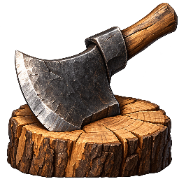

Holzfäller · ein Symbol, große Formen
Neuer Entwurf: Holzfäller, Steinbruch und Eisenmine in gedeckteren Farben →
Axt und Holzstamm als Nahansicht. Der Entwurf wird hier in derselben Größe wie im Baumenü gezeigt: 40 × 40 Pixel.
Bisheriges Symbol · 40 px
+3.5 Holz/s
Holz 200 · Stein 120 · Eisen 80
Ausbauen →2
Cinematic-Entwurf · 40 px

HolzfällerStufe 1
+3.5 Holz/s
Holz 200 · Stein 120 · Eisen 80
Ausbauen →2
Lesbarkeit in verschiedenen Größen
40 px · Baumenü
64 px
128 px · Materialansicht
Stilprobe für den Holzfäller. Noch nicht in das Spiel übernommen; die anderen Symbole werden erst nach Festlegung des Stils gestaltet.
Generierungsprompt · Zum Spiel